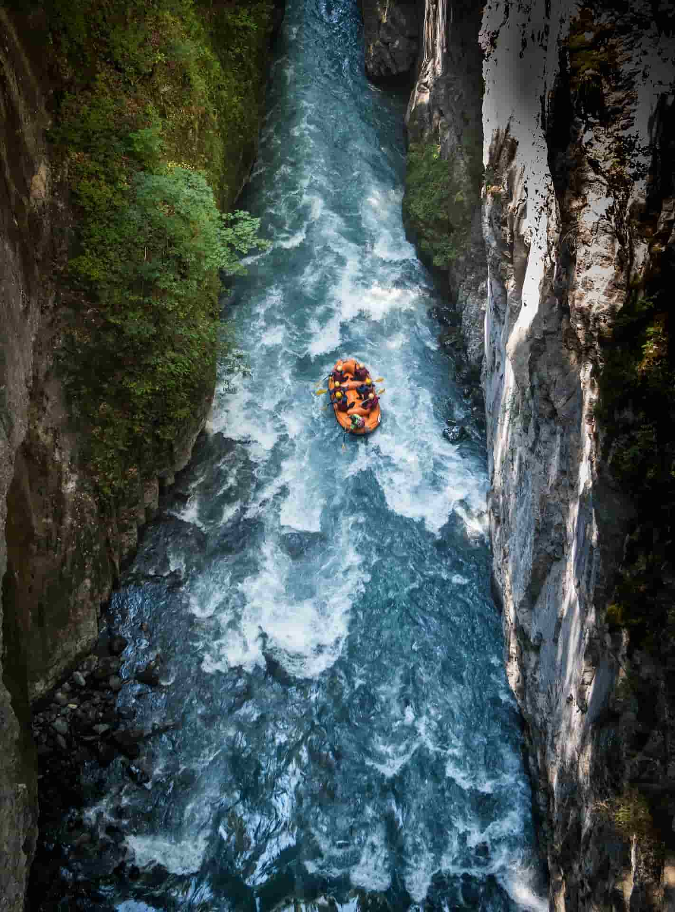
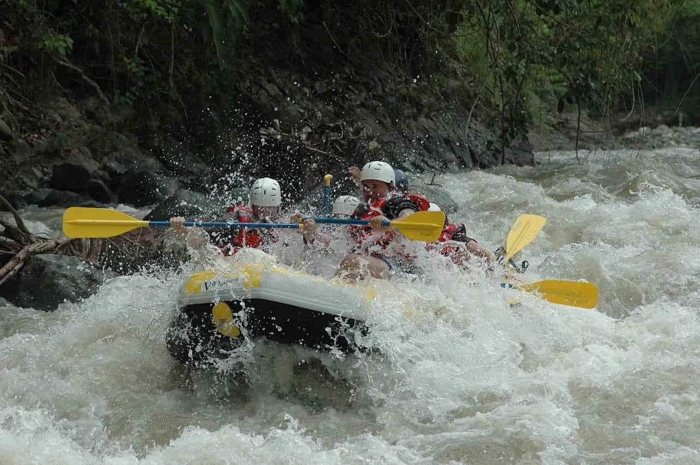
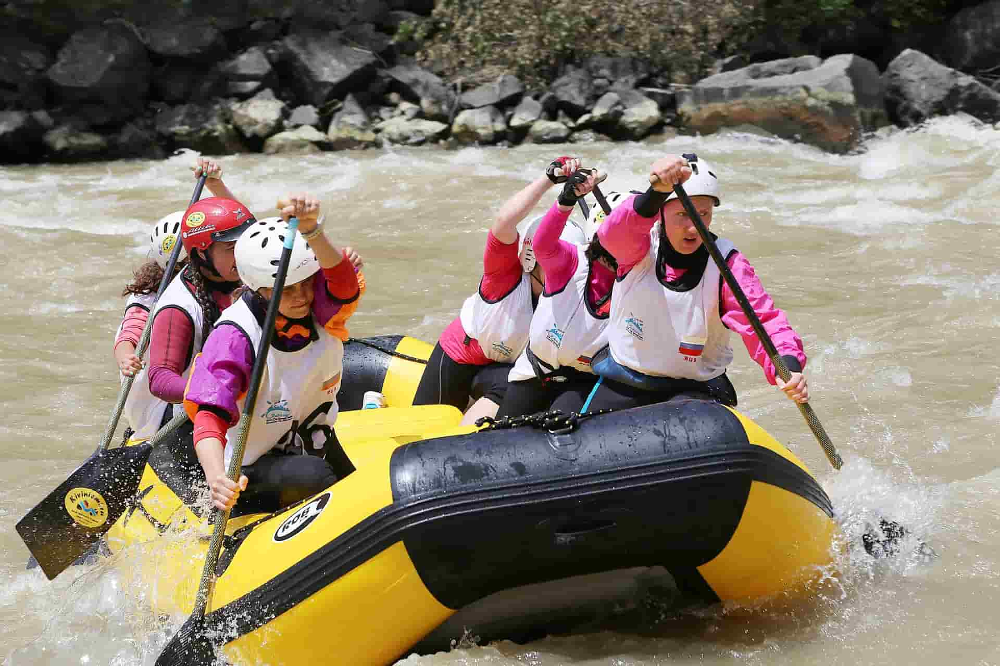

Stiegler's Gorge
Our flagship full-day run through dramatic canyon walls and class III-IV rapids. Includes a riverside lunch and professional safety guides. Best suited for guests with some prior rafting experience.
Not sure which adventure fits you best? Our team is happy to help you plan the perfect day on the river.
Contact Us to Book
Our flagship full-day run through dramatic canyon walls and class III-IV rapids. Includes a riverside lunch and professional safety guides. Best suited for guests with some prior rafting experience.

A short, intense stretch of whitewater for thrill seekers. This half-day trip packs continuous rapids into just three hours, with a certified guide in every raft.

Beat the heat and the crowds with an early start. Calmer water makes this trip ideal for families and first-time rafters, with coffee and snacks included at the put-in.
| Trip | Duration | Difficulty | Group Size | Price |
|---|---|---|---|---|
| Stiegler's Gorge | Full Day | Class III-IV | Up to 8 | $120 |
| Devil's Throat | Half Day | Class IV | Up to 6 | $75 |
| Crocodile Alley | Half Day | Class II-III | Up to 10 | $65 |
| Sunrise Half-Day Adventure | Half Day | Class I-II | Up to 10 | $60 |
| Full-Day Expedition | Full Day | Class III-IV | Up to 8 | $135 |